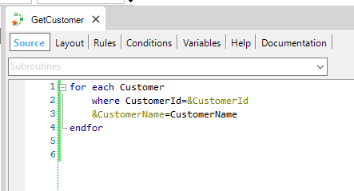
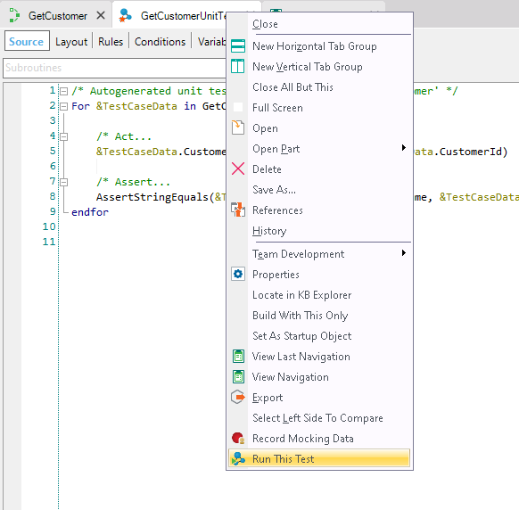
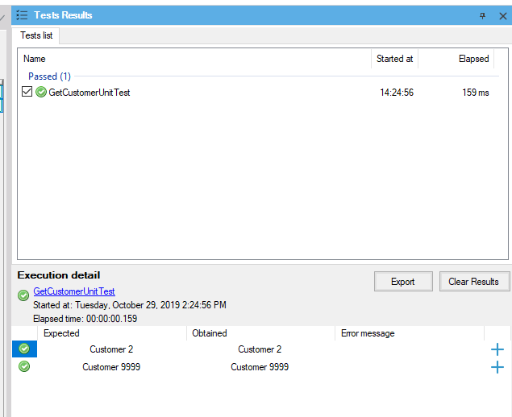
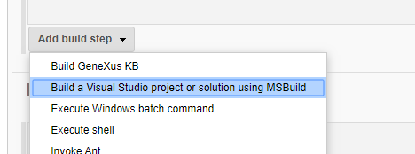
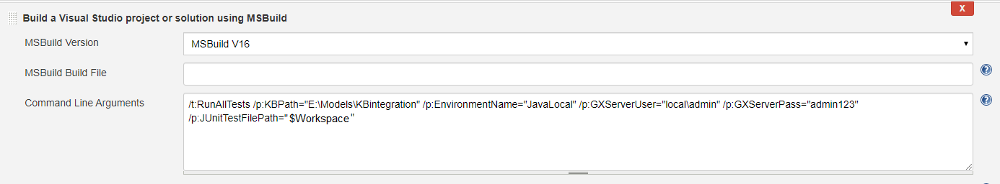
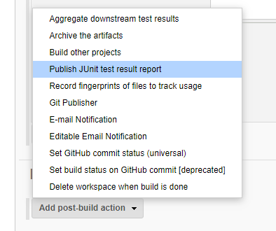
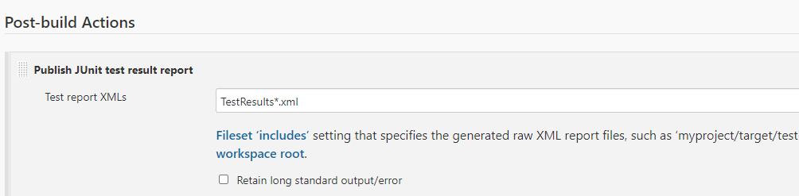

How to create a unit test and add a task using the GeneXus Jenkins Plugin
After you have configured the build process, you must configure the testing process of the application. For that, you have to create a unit test and you have to add a task in Jenkins by which the unit test will be executed unattended.
So, you have to add steps in the configuration of your Jenkins project in which you have been working using DevOps.

Once steps 1 and 2 of the pipeline have been executed, the next step in the pipeline to be executed is the execution of the tests.
3 - Run Unit Tests
After executing the KB update and Build all, the unit tests defined in the KB must be executed.
For that, the steps to follow are:
Step 1: Have a Jenkins project created.
Step 2: Unit Test Creation
Suppose you have the following procedure defined in the development KB (KBDevelopment) and also in the integration KB (KBIntegration):

The procedure has the following parm rule:
parm(in:&CustomerId,out:&CustomerName);
This procedure receives CustomerId as an input parameter and returns the CustomerName as an output parameter.
Create a unit test for the “GetCustomer” procedure, right-clicking on the object and selecting “Create Unit Test”.
Open the data provider “GetCustomerUnitTest” and copy the following code:
GetCustomerUnitTestSDT
{
CustomerId = 2
ExpectedCustomerName = "Customer 2"
ErrorMsgCustomerName = ""
}
GetCustomerUnitTestSDT
{
CustomerId = 9999
ExpectedCustomerName = "Customer 9999"
ErrorMsgCustomerName = ""
}
Note: Having previously created 2 records in the TRN Customer with the IDs and Names indicated in the data provider.
Right-click on the “GetCustomerUnitTest” procedure and select Run This Test:

In the "Test results" panel you can verify the result obtained from the execution:

Step 3: Jenkins Configuration
Now, you have to configure the test step in Jenkins. This step will execute the unit test that you’ve just created.
For this, it is necessary to add a step in your pipeline.
Add step for test execution
In the “Integration” project, select the “Configure” menu, go to the “Build” section of the project tabs and select the “Add build step” option of type “Build a Visual Studio project or solution using MSBuild”.


Command Line Arguments
/t:RunAllTests
/p:KBPath="E:\Models\KBintegration"
/p:EnvironmentName="JavaLocal"
/p:GXServerUser="local\admin"
/p:GXServerPass="admin123"
/p:JUnitTestFilePath="$Workspace"
/p:AllowFailedTests="true"
Add step for publishing results
Go to section “Post-build Actions”, expand “Add post-build action” and then select “Publish JUnit test result report”

Fill with the value “TestResults*.xml” the field “Test report XMLs” and save changes. Note that this value is relative to the current project's workspace folder. For more information about Jenkins environment variables visit this article

Commit tests and see test results
Finally, commit the unit test and view the results of the pipeline execution.
When pipeline execution is finished, test results can be viewed in the section “Test Result” inside the corresponding pipeline menu.
| Backlinks | ||
| Toc:DevOps in GeneXus | Toc:GXtest v4 | |
| Methodology | MSBuild Tasks | Typical GeneXus development cycle for Agile |